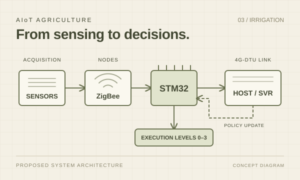

ENGINEERING PROJECT
AIoT Irrigation and Fertigation System
School of Transportation and Electrical Engineering
Dalian University of Science and Technology
Software prototype

Abstract
This project combines an AIoT system design with a software decision prototype for irrigation. A dual-output support vector regression model predicts watering duration and the interval before the next watering event from environmental inputs and irrigation history.
The system design translates continuous model outputs into a small set of edge-execution levels, creating an interface between host-side prediction and an STM32 controller.
System architecture
The proposed acquisition path uses a CC2530-based star ZigBee network for soil, environmental and tank-level sensing. An STM32 edge controller connects through UART or RS-485 to a 4G-DTU and then to host-side decision software and visualization.
The design specifies automatic cycles, manual intervention, tank-level alarms, local execution levels from 0 to 3, and threshold updates. Host-side predictions for watering duration and interval would be bounded and mapped to those execution levels. These functions describe the system design, rather than a completed end-to-end hardware demonstration.
My contribution
I designed the technical solution, developed the model workflow, prepared prototype validation and organized the project deliverables. My work linked the communication and control design with the inputs and outputs of the software model.
The model workflow combines factor analysis and adaptive weighting with dual-output SVR. This supports inspection of the factors contributing to a proposed irrigation decision.
Software prototype validation
The model workflow was evaluated using 2,160 simulated samples compatible with the intended system fields. Watering duration and the next-watering interval were evaluated as separate regression targets.
This exercise established a runnable software workflow for prototype prediction and decision logic. It provides a basis for later calibration and integration with acquired data and physical actuators.
Related irrigation-nozzle design
A related agricultural-irrigation-nozzle design is recorded in a Chinese design-patent application, No. 202630288223.6, filed on June 6, 2026; the application was accepted. I am the applicant and one of the listed designers, alongside Zhichao Xu, Bohan Du and Jiayi Li.
The related project, “Passive Pressure-Equalizing, Clog-Resistant Adjustable Agricultural Irrigation Nozzle,” received Third Prize in the Innovation Design category of the 2026 Liaoning Innovation Method Competition in October. I was one of its participating team members.
The application concerns appearance design. This hardware-design record is separate from the SVR/control-software validation; the application and award do not establish control-algorithm protection or hydraulic-performance results.
Scope and limitations
The samples are simulated rather than field measurements. Software prediction results do not establish delivered-water accuracy, crop benefits or operation of the complete ZigBee–STM32–4G hardware chain.
Further work requires real-data collection, sensor calibration, pump-flow and valve-response measurements, and verification of command transmission and execution. The continuous predictions must also be calibrated against the actual irrigation equipment before operational use.